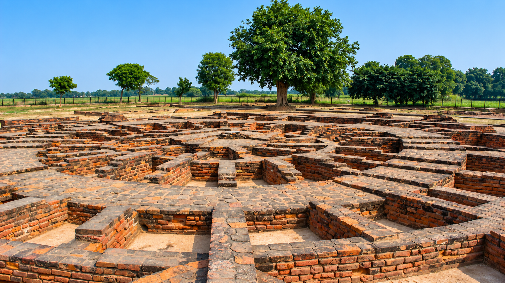

Protect monuments
Safeguard protected structures, archaeological remains, and their surrounding settings.
Government of India
Chandigarh Circle
About the Chandigarh Circle
The Archaeological Survey of India, Chandigarh Circle protects the monuments, archaeological remains, and cultural stories that connect the region's past with its present.
Our role
The Chandigarh Circle is responsible for the care of nationally important heritage across Chandigarh, Punjab, Haryana, and adjoining areas. Our work brings together archaeology, conservation, documentation, research, and public interpretation.
Every protected site is treated as part of a wider cultural landscape. Conservation is carried out with respect for original materials, historic character, and the communities who continue to experience these places today.
What we do
Safeguard protected structures, archaeological remains, and their surrounding settings.
Plan scientific repairs, restoration, maintenance, and material preservation.
Record sites and objects through research, drawings, photography, and archives.
Help visitors and local communities understand and value shared heritage.

A diverse region
The circle's heritage includes archaeological sites, historic gateways, religious architecture, colonial-era structures, museums, and the modern architectural legacy of Chandigarh.
Meet the Chandigarh Circle